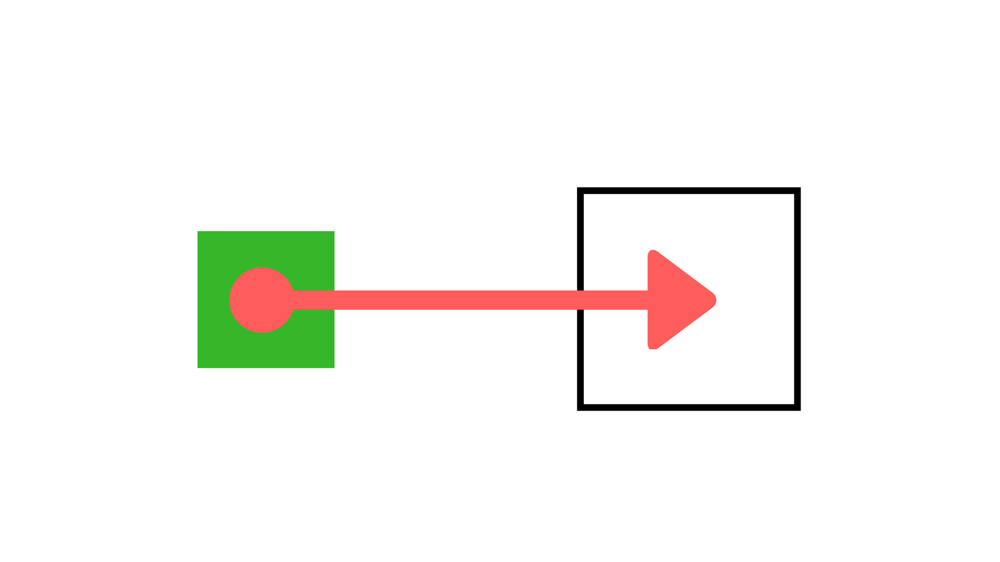
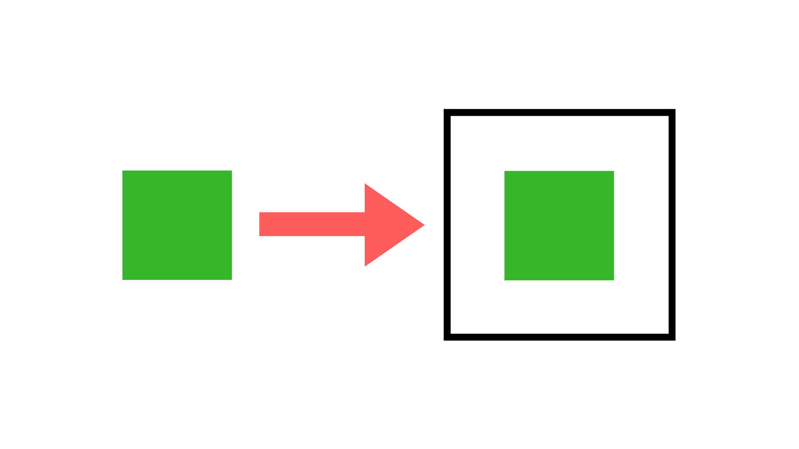
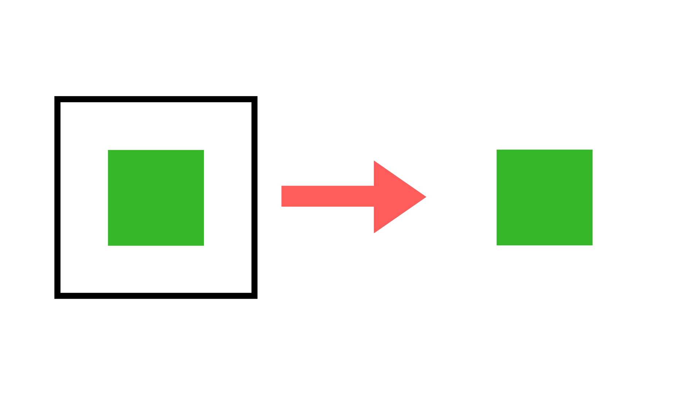

Functional JavaScript with Monads
Functional programming is NOT something new
You do NOT need to use FP just because it's "trendy"
Monads
Find Similarities
- Functional Programming
- Reactive Programming
- RP is not mandatory a FP 😈
- 1 + 2 Old School 👎
- R.add(1)(2) Better
- Maybe.Just(1).ap(Maybe.Just(2).map(R.add)).just(); Perfection 🔥
const car = new BaseCar();
car.installEngine();
car.installWheels(15);
car.installInterior('leather');
car.paint('yellow');
car.save();
c(b(a(x)))
Maybe( x ).bind(a).bind(b).bind(c)
a, b, c - Pure Functions
Do NOT access outer scope, do NOT mutate arguments.
FP Approach
const car = Monad.of(BaseCar)
.bind(installEngine)
.bind(installWheels(15))
.bind(installInterior('leather'))
.bind(paint('yellow'))
.flatten()
Function Composition
Monad Pattern
In functional programming, a monad is a design pattern that defines how functions, actions, inputs, and outputs can be used together to build generic types,[1] with the following organization:Define a data type, and how values of that data type are combined.Create functions that use the data type, and compose them together into actions, following the rules defined in the first step.A monad may encapsulate values of a particular data type, creating a new type associated with a specific additional computation, typically to handle special cases of the type. For example, the simple Maybe monad encapsulates variables which may have a null value, representing an option type, and automatically ensures that null values are not passed as arguments to functions that cannot handle them, serving as an alternative programming technique to throwing and catching exceptions when null values arise. Another example is the List monad, where the empty list is a constant value of type List, and the cons operator binds a plain value as the head of a previous list.The monad represents computations with a sequential structure: a monad defines what it means to chain operations together. This enables the programmer to build pipelines that process data in a series of steps (i.e. a series of actions applied to the data), in which each action is decorated with the additional processing rules provided by the monad.[2] A monad is defined by a return operator that creates values, and a bind operator used to link the actions in the pipeline; this definition must follow a set of axioms called monad laws, which are needed for the composition of actions in the pipeline to work properly.Monads allow a programming style where programs are written by putting together highly composable parts, combining in flexible ways the possible actions that can work on a particular type of data. As such, monads have been described as "programmable semicolons"; a semicolon is the operator used to chain together individual statements in many imperative programming languages,[2] thus the expression implies that extra code will be executed between the actions in the pipeline. Monads have also been explained with a physical metaphor as assembly lines, where a conveyor belt transports data between functional units and that transform it one step at a time.[3]Purely functional programs can use monads to structure procedures that include sequenced operations like those found in structured programming.[4][5] Many common programming concepts can be described in terms of a monad structure without losing the beneficial property of referential transparency, including side effects such as input/output, variable assignment, exception handling, parsing, nondeterminism, concurrency, continuations, or domain-specific languages. This allows these concepts to be defined in a purely functional manner, without major extensions to the language's semantics. Languages like Haskell provide monads in the standard core, allowing programmers to reuse large parts of their formal definition and apply in many different libraries the same interfaces for combining functions.[6]The name and concept comes from category theory, where monads are one particular kind of functor, a mapping between categories. In functional programming contexts, thanks to the specifics of the category used, the term monad denotes what is known as strong monad in category theory.[7]A monad is created by defining a type constructor M and two operations, bind and return (where return is often also called unit):The unary return operation takes a value from a plain type (a) and puts it into a container using the constructor, creating a monadic value (with type M a).The binary bind operation ">>=" takes as its arguments a monadic value with type M a and a function (a → M b) that can transform the value.The bind operator unwraps the plain value with type a embedded in its input monadic value with type M a, and feeds it to the function.The function then creates a new monadic value, with type M b, that can be fed to the next bind operators composed in the pipeline.With these elements, the programmer composes a sequence of function calls (the "pipeline") with several bind operators chained together in an expression. Each function call transforms its input plain type value, and the bind operator handles the returned monadic value, which is fed into the next step in the sequence. Between each pair of composed function calls, the bind operator can inject into the monadic value some additional information that is not accessible within the function, and pass it along. It can also exert finer control of the flow of execution, for example by calling the function only under some conditions, or executing the function calls in a particular order.For example, the following code defines a binary operator x//y as safe division that avoids dividing by zero, using the Maybe monad and its constructors Nothing and Just.[a] The monadic values x and y may have the form Nothing or Just i, where i is an integer. The integer values contained within x and y are extracted into the plain values a and b, which are processed by the plain division operator "/" only when b is not zero.In the fourth example expression, a pipeline that chains together two safe divisions, the result of the first division is Nothing, which is fed as the input value to the second "//" operator; therefore the result is Nothing as well. Notice how the definition of the "//" operator doesn't need to check whether any of its input values is Nothing, as the bind operator of the Maybe monad already handles this concern: by definition of bind, when either the x or the y monadic parameters are Nothing (instead of matching the pattern Just value), the "if b==0 ..." expression is not evaluated.The operations that define the monad must fulfil several properties to allow the correct composition of monadic functions (i.e. functions that use values from the monad as their arguments or return value). Because a monad can insert additional operations around a program's domain logic, monads can be considered a sort of aspect-oriented programming.[8] The domain logic can be defined by the application programmer in the pipeline, while required aside bookkeeping operations can be handled by a pre-defined monad built in advance.

Monad Should Follow:
- Left Identity
- Right Identity
- Associativity
Mama always had a way of explaining things so I could understand them.
Forrest Gump
Monad
from()
3 Monads
map()
flatten()
Type Agnostic
interface Monad {
value: any;
from(value): Monad
flatMap(x -> Monad): Monad
map(x -> y): Monad
flatten(): any:
}
from()

from()
map()

map()
bind(), chain(), flatmap()

Bind(), chain(), Flatmap()
flatten()
flatten()
Flat Structure
const data = [1, 2, 3];
data.map(x => [x, x*2, x * 10]);
[[1, 2, 10], [2, 4, 20], [3, 6, 30]];
data.flatMap(x => [x, x*2])
[1, 2, 10, 2, 4, 20, 3, 6, 30];
Monet
- Unit
- Maybe.Some
- Maybe.None
- Maybe.fromNull
- Either
- List
Monad.from( 5 ).map(x=> x + 1).flatten()
6
Map, FlatMap, Filter, Take, ...
Maybe.Some(6).filter(x=> x > 10).some()
null
Maybe.Some(6).filter(x=> x > 10).orSome(10)
10
const fn = x => x > 0 ? Maybe.Some(x) : Maybe.none();
Maybe.Some(6).flatMap(fn).some();
// 10;
const formatResponse = (res) => Maybe.some({
address: Maybe(res.address)
.map(formatAddress)
.orSome(defaultAddress),
name: Maybe.fromNull(res.name)
....
});
Rx.js
countries$.map(getCities).subscribe(save);
// returns list of observables
countries$.flatMap(getCities).subscribe(save);
// returns list of cities
Questions?

Send me a Pigeon
- facebook / tryshchenko
- github / tryshchenko
- twitter / tryshchenko
- tryshchenko.com
- otry.eu
Credits